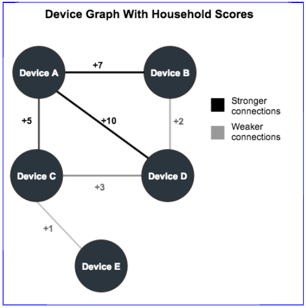

Household Scores
Household scores measure the relationship strength between nodes (devices) in the Device Graph.
-
High scores suggest a closer connection between devices in a household than lower scores. High scores improve accuracy, but reduce reach.
-
Low scores suggest a looser connection between devices in a household than higher scores. Low scores reduce accuracy, but increase reach.
Keep in mind, however, that these scored connections are abstract representations of different data points. They are not physical links between nodes.
Purpose of household scores
As described in the Device Graph Overview, a device graph is a map of connected devices on a network. By itself, a device map is not very useful because the nodes and connections (edges) between them look identical. As a result, we need a way to identify and define the relationships between each device.
A metric, known as a household score helps us understand the relationships between and among different devices. A household score ranges from 1 (weakest) to 10 (strongest). Devices with high scoring edges are more strongly related than devices with lower scoring edges. As an example, see the device graph below.

This diagram shows devices A through E and their corresponding household scores. Within this graph:
-
Device A shares strong connections with Devices B, C, and D.
-
Devices B, C, D, and E share weak connections among themselves.
Building household scores
Our proprietary technology and algorithms help identify household devices and calculate their scores. Some key metrics that contribute to score calculations include:
-
Frequency: Our technology increases the household score between devices that connect to the same network frequently.
-
Recency: Our technology increases the household score between devices that connect to the same network within a set time interval.
-
Authenticated data: Device information from sites that require authentication. These devices usually have strong household scores because the authentication process ties a device to a specific user.
Important
Household scores increase in value only. To avoid perpetually increasing scores, and maintain data freshness, edges can (and do) expire. The Device Graph removes expired edges and scores from household network maps.
What do the scores really mean?
Scores range from 1 (weakest) to 10 (strongest). Choosing one score vs another affects how many devices you can target or how many devices are available for synchronization.
But, what does it mean to select a score of 3 compared to 5, or 7, or any other scores?
- A score of 1 represents 100% of the available edges.
- Each score greater than 1 reduces the available edges by 10% (e.g., score 2 reaches 90% of all edges, score 3 reaches 80%, and so on).
- Scores work on an equal to or greater than basis (e.g., score 7 includes all edges with the same value or higher).
| Score > = | % of available edges |
|---|---|
| 1 | 100% |
| 2 | 90% |
| 3 | 80% |
| 4 | 70% |
| 5 | 60% |
| 6 | 50% |
| 7 | 40% |
| 8 | 30% |
| 9 | 20% |
| 10 | 10% |
Reach vs accuracy
Reach represents how many devices are available for targeting or synchronization. Accuracy represents how precise you are at delivering relevant content to those devices. Reach and accuracy are inversely proportional. As you increase the household score:
-
Reach decreases because score targeting includes devices that are equal to or greater than the selected score.
-
Accuracy increases because you're more likely to reach a specific device audience.
Let's use the sample device graph above to demonstrate this behavior. Say you want to synchronize Device A with all the other devices in the graph and set the household score to 7. In this case, you'll reach Devices B (score 7) and D (score 10) only because those devices share an edge with device A that is = > 7. Targeting a score of 7 excludes any edges with lower values.